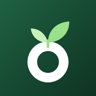

Aplikacje z Wiednia
Aplikacje, które naprawdę pomagają na co dzień.
Uplift in Life to małe studio aplikacji w Wiedniu. Każda aplikacja robi jedną rzecz i robi ją dobrze: uczciwa cena, bez reklam, w wielu językach.
Nasze aplikacje

Stiege
Pomaga przygotować się do egzaminu ÖSD A1–C1
Ta sama struktura, te same typy zadań i ten sam czas co na egzaminie ÖSD. Teksty są nowe.
Dowiedz się więcej
Macrolia
Kalorie i makroskładniki
Dokładne kalorie i makroskładniki z etykiety, z własnymi przepisami, porcjami i celami.
macrolia.appCo jest dla nas ważne
Uczciwie
Przed zapłatą widać dokładnie, co jest w cenie.
Bez reklam
Bez reklam, bez sztuczek, bez ciągłych próśb o zapłatę.
Wiele języków
Menu i wyjaśnienia w 14 językach.